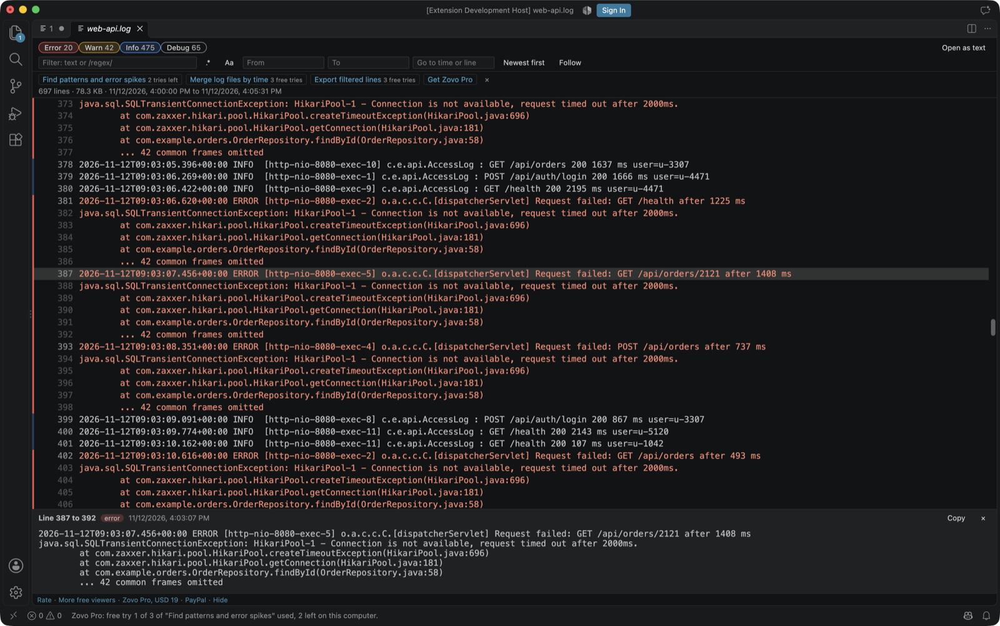

Log Viewer & Log File Analyzer
Log Viewer & Log File Analyzer, a VS Code extension by Zovo
Open log files of any size in VS Code and find the line that matters. A 2 GB log opens in seconds because the file is indexed by streaming and only the lines on screen are read. Levels are colored, stack traces stay with their error, and the view follows the file as it grows.
Free, MIT license. Needs VS Code 1.82.0 or newer. Extension ID zovo.zovo-log-viewer, version 0.1.0.

Questions people ask
Is Log Viewer & Log File Analyzer free?
Yes. Log Viewer & Log File Analyzer is free and MIT licensed.
How do I install Log Viewer & Log File Analyzer?
Click "Install in VS Code" above, or search for zovo.zovo-log-viewer in the Extensions view.
Free, with no limits
- Large files: GB logs open fast, scroll smoothly and never load into memory. Lines up to 64 KB show in full.
- Levels in color: error, warning, info, debug and trace from plain text, JSON (
"level", pino and bunyan numbers), syslog priorities and Android logcat. Chips with counts show or hide each level; Alt+click shows only one. - Timestamps detected in ISO 8601, syslog, Apache, logcat, Log4j, HDFS, Spark and JSON fields (
time,ts,@timestamp, epoch ms). - Filter by text or
/regex/, match case, and a time range like10:00to10:30or-15m. A match inside a stack trace keeps the whole entry. - Follow mode like
tail -f: new lines appear as the file grows. Rotated or truncated files are read again. - Go to a time or a line number, newest first, and a detail pane that shows the whole entry or a JSON line as pretty JSON.
- Opens
.log,.log.1and friends by default; any other file with Open in Log Viewer. Open as text is one click away.
Pro tools
Zovo Pro: USD 19 once. One purchase turns on the Pro tools in every Zovo extension. Each tool here has 3 free tries first:
- Find patterns and error spikes: similar lines grouped into patterns with counts (numbers, ids, times and addresses masked), and the minutes where errors spiked.
- Merge log files by time: several services, nodes or rotated files in one timeline, each line tagged with its file.
- Export filtered lines: the current view as CSV, JSON Lines or a plain log file.
Privacy
Log Viewer reads your file and nothing else. It makes no network calls and has no telemetry. Pattern reports and exports are written only where you choose.
Limits in this version
- Files are read as UTF-8. UTF-16 logs (some Windows tools) show as garbled text.
- Lines longer than 64 KB are cut in the view, not in the file.
- Formats without a year (syslog, logcat) take the year the file was last written.
- The index takes about 22 bytes of memory per line, so 50 million lines need about 1.1 GB. The limit is the setting
zovoLog.maxLines. - Local files only (including Remote SSH and WSL folders). Virtual file systems are not supported.
Guides
Install Log Viewer & Log File Analyzer
Click the button to open VS Code and install it, or press Ctrl+P (Cmd+P on macOS) in VS Code and run ext install zovo.zovo-log-viewer.
Free, MIT license. Needs VS Code 1.82.0 or newer. Extension ID zovo.zovo-log-viewer, version 0.1.0.
Source code and issues are on GitHub.
Zovo Pro and support
Zovo Pro: USD 19 once, every Zovo viewer. It turns on the Pro tools in this extension and in the other Zovo extensions you use. The free features stay free.
After a card payment your license key shows on the next page. Paste it with the command "Zovo Pro: Enter a key".
You can also support the work with no Pro:
Need your format supported?
Open a format request with a sample file, and I reply there whether it can be done. For USD 299 once, through this GitHub Sponsors tier, I add your file format or a missing feature to this extension, with tests, within 7 days.